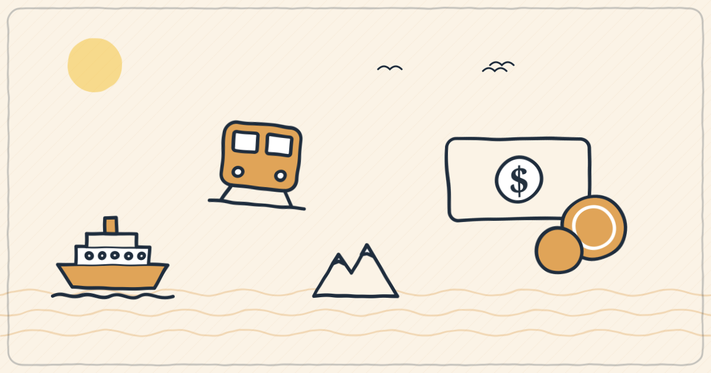

Alaska Cruise From Vancouver: What a Couple Really Pays
At recent prices a couple pays roughly US$2,500–5,200 (C$3,500–7,200) all-in for a 7-night Alaska round trip from Vancouver in an inside cabin, or about US$3,600–7,000 (C$5,000–9,700) with a balcony. Lower Mainland residents save another C$550–1,200 by skipping flights and a pre-cruise hotel.

A 7-night Alaska cruise out of Canada Place costs a couple somewhere between about US$2,500 and US$5,200 all-in for an inside cabin, roughly C$3,500–7,200, at recent prices. Choose a balcony and the range moves to about US$3,600–7,000, or C$5,000–9,700. If you live in Metro Vancouver, the number that matters most is the one that is not there: no airfare, no hotel night, and a transit ticket to the pier.
What decides the price of an Alaska cruise
Two things drive almost everything: when you sail and which cabin you pick.
- Season. May and September fares sit at the bottom of the range. Late June to mid-August, when schools are out across Canada and the US, is peak and can add US$300–600 per person.
- Cabin. Inside cabins run about US$700–1,100 per person in the shoulder months; balconies about US$1,200–2,000. Alaska is the itinerary where a balcony earns its keep, with full days of scenic cruising and a glacier morning you can watch in your dressing gown.
- Line and ship. Premium lines price higher but include more. Mass-market ships are cheaper up front with more add-ons.
Fares and most onboard charges are in US dollars, so Canadians should read whether to pay in CAD or USD before booking.
A line-by-line budget for two
Per couple, 7-night round trip from Vancouver, at recent prices. Canadian figures are approximate conversions.
| Cost item | Inside cabin | Balcony cabin |
|---|---|---|
| Fare for two | US$1,400–2,200 (C$1,900–3,100) | US$2,400–4,000 (C$3,250–5,600) |
| Taxes, fees and port charges | US$400–600 (C$540–840) | US$400–600 (C$540–840) |
| Daily gratuities, 7 nights | US$250–350 (C$340–490) | US$250–350 (C$340–490) |
| Transport to and from Canada Place | US$7–120 (C$10–160) | US$7–120 (C$10–160) |
| Drinks without a package | US$110–400 (C$150–560) | US$110–400 (C$150–560) |
| Wifi | US$0–200 (C$0–280) | US$0–200 (C$0–280) |
| Shore excursions, one or two each | US$300–1,000 (C$400–1,400) | US$300–1,000 (C$400–1,400) |
| Travel medical insurance | US$110–360 (C$150–500) | US$110–360 (C$150–500) |
| Total | US$2,500–5,200 (C$3,500–7,200) | US$3,600–7,000 (C$5,000–9,700) |
Always ask whether a quoted fare includes taxes and port fees. Two prices that look identical can differ by several hundred dollars once that line is added.
Why locals pay less than everyone else
A couple flying in from Calgary, Toronto or Chicago adds a return flight of roughly C$300–700 per person and a hotel the night before at C$250–450, plus airport transfers and, for drivers, nine days of parking at the home airport. Getting to the low end of that flight range is mostly a matter of when you book flights for an Alaska cruise. Vancouverites skip all of it, a saving of about C$550–1,200 per couple, and often need one or two fewer days off work. Albertans sit in between: the cheapest ways from Edmonton to the Vancouver cruise port compares flying, driving and the coach. That short hop is also the main reason Alaska undercuts a Norwegian fjords cruise from Canada, where the flight alone can match the fare.
Getting to the ship from Metro Vancouver
The cheapest route is the SkyTrain. The Expo Line and Canada Line both stop at Waterfront, a few minutes' walk from Canada Place, and TransLink charges a one-zone fare at weekends and weekday evenings, so a couple travels for a handful of dollars each way. A taxi or rideshare from Burnaby, Richmond or Surrey runs roughly C$40–80 each way.
Driving is the expensive option. Pre-booked parking at the terminal costs about C$210–280 for a week at recent rates; off-site lots and hotel park-and-cruise deals are cheaper. Coming from Vancouver Island or the Sunshine Coast, factor in BC Ferries and a generous buffer, because a missed sailing is a missed ship.
What Americans should know about sailing from Vancouver
Vancouver round trips spend more time in the sheltered Inside Passage than Seattle round trips, which head out into open ocean and must stop in Victoria to satisfy US cabotage rules. Many cruisers find the Vancouver route calmer and more scenic. One-way sailings between Vancouver and Whittier or Seward also start or end here, reaching Glacier Bay or Hubbard Glacier and finishing near Anchorage, with a flight home of about US$300–650 (C$400–900) per person.
Where the money should go
With no flights to pay for, local couples tend to upgrade in one of two places.
The balcony premium of roughly US$950–1,800 per couple (C$1,300–2,500) is easier to swallow when nothing else is added to the fare. Alaska rewards it more than any Caribbean itinerary, provided you pick the right one: which side, deck and cabin number decides whether the premium buys a glacier or the roof of a lifeboat.
The other upgrade is a single memorable excursion: whale watching from Juneau at about US$150–250 per person, or glacier flightseeing from US$400. Walk Ketchikan and Skagway on your own to pay for it. How many shore excursions to book explains why one or two is plenty.
Easy ways to trim the bill
- Sail in May or September.
- Prepay gratuities in Canadian dollars at booking if your line allows it, which locks the rate; what a moving loonie does to the rest of the bill shows why that matters.
- Carry on wine within the line's allowance (usually one or two bottles per cabin).
- Register a credit card with no foreign transaction fee for the onboard account.
- Skip the drink package unless you average four or more paid drinks a day.
- Ask about military, veteran and senior rates before final payment; they sometimes beat the public sale.
- Price Seattle as a check, then add the drive, border, US parking and the exchange rate before deciding.
Weighing the cruise against a road trip up the coast or a resort week? Cruise vs land vacation costs sets out the comparison, and remember that Alaska runs an hour behind Vancouver, as explained in cruise ship time zones.
Want this checked for your own sailing? A licensed cruise consultant can price it up and answer questions for free, with no obligation.
Ask a cruise expert →Cheaper nights from the same pier
The same ships leave Canada Place for Hawaii each fall and return each spring, priced as repositioning voyages. If you have two weeks and like sea days, the Vancouver to Hawaii cruise is often better value per night than the Alaska week, and in April and October the longer Panama Canal transits that start or end in Vancouver are priced the same way.
The bottom line from Canada Place
Budget the full table, not the fare. For a Vancouver couple, a shoulder-season inside cabin with one good excursion lands under C$4,000; a peak-season balcony with the works heads toward C$10,000. Everything in between is a choice, and none of it involves an airport.
Still wondering?
How much is a 7-day Alaska cruise from Vancouver per person?
Fares alone run about US$700–1,100 per person for an inside cabin in May or September and US$1,200–2,000 for a balcony, with July and August higher. Add taxes, gratuities, excursions, drinks and insurance and a realistic per-person total is roughly US$1,250–2,600 inside or US$1,800–3,500 balcony.
Is it cheaper to cruise to Alaska from Vancouver or Seattle?
Fares are often similar, and Seattle sometimes undercuts. For Canadians, Vancouver wins once you add the drive, border wait, US parking and the exchange rate on Seattle costs. For Americans flying in, Seattle usually has cheaper and more frequent flights, so compare the full trip, not the fare.
What is the cheapest month for an Alaska cruise?
May and September, the ends of the season, with the lowest fares and fewer families. Expect cooler, wetter weather and some shorter days in September. Late June through mid-August is peak pricing, often several hundred dollars more per person.